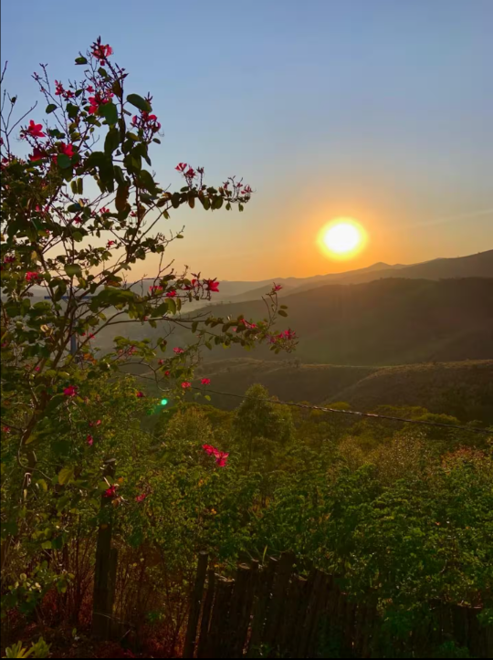
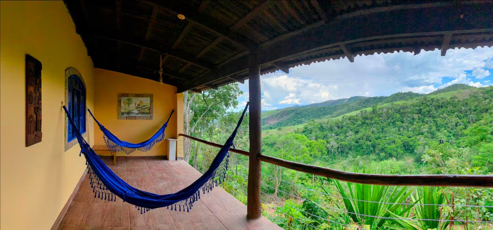
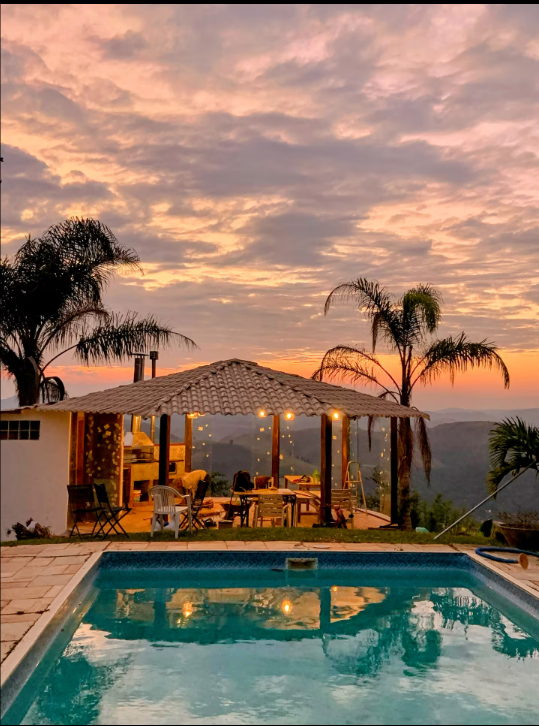
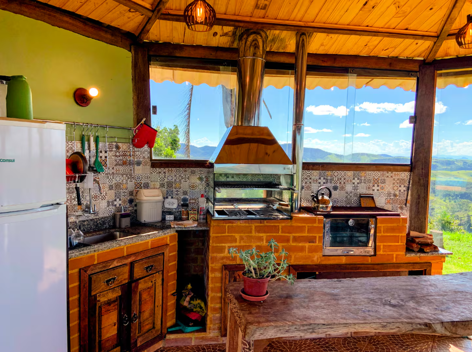
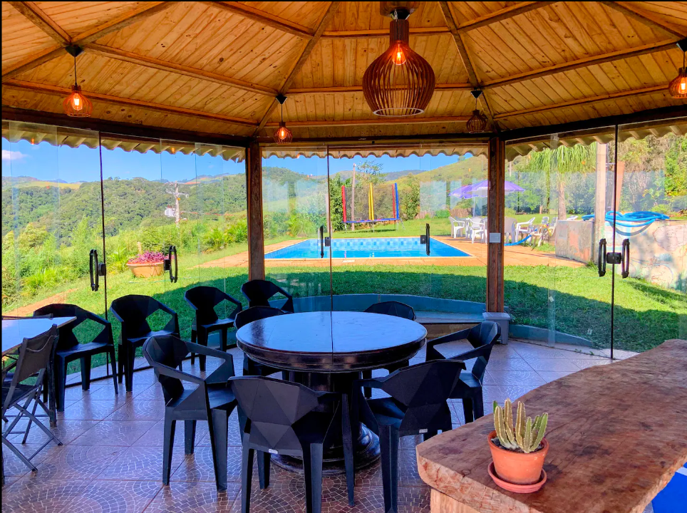
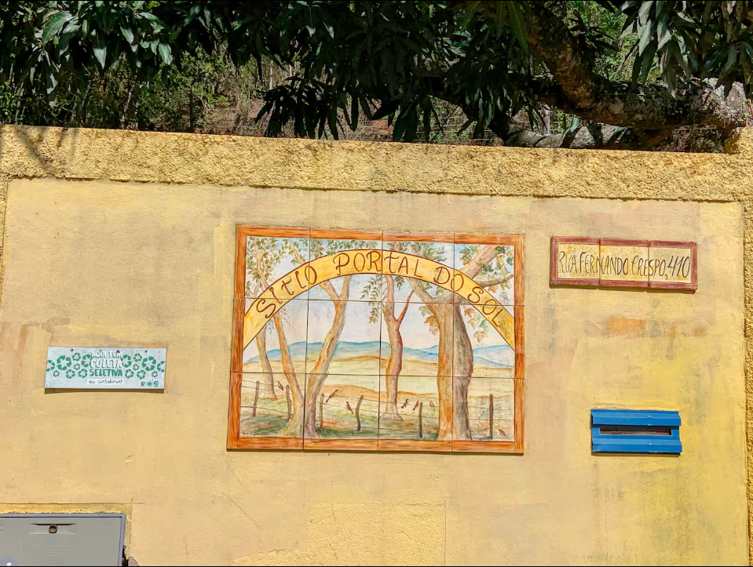
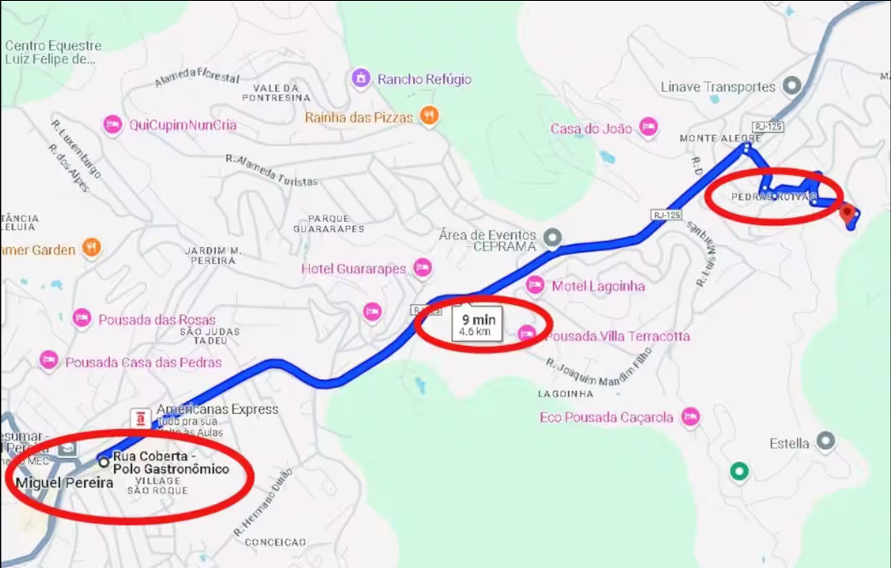
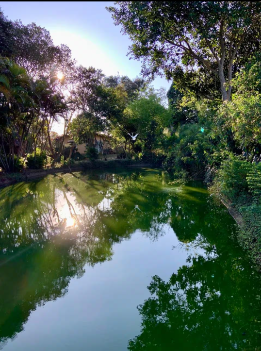
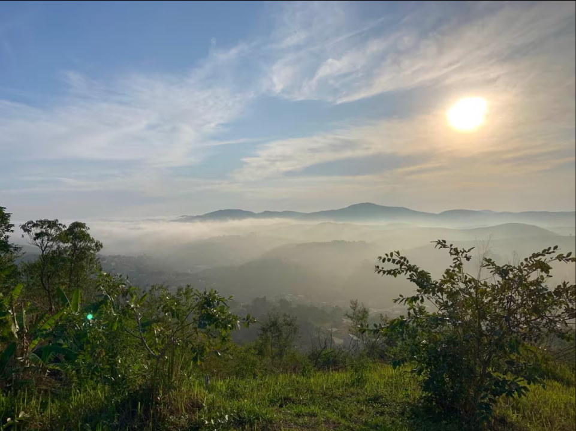

Fotos do Sítio









👥 Participantes
🛒 Compras avulsas
Registre compras feitas individualmente e quem pagou.
🛍️ Compras para levar
Insira aqui o que vamos comprar para passar o fim de semana.
🏡 Check-in
Ao chegar, avaliem e registrem o estado da casa.
Check-in após 15:00
🚪 Check-out
Antes de sair: tudo conferido e organizado.
Check-out antes das 15:00
📌 Sobre este espaço • Portal do Sol
Perfeito para famílias e amigos, este sítio no topo da montanha oferece privacidade, infraestrutura para lazer, descanso e contemplação. Belos jardins e vista única para Miguel Pereira e Paty do Alferes. Casa estilo fazenda com 3 quartos para até 11 pessoas, piscina aquecida, quiosque envidraçado com churrasqueira, forno a lenha, Smart TV 43" e Wi-Fi, lago e mirante com fogueira. A 10 minutos de carro dos centros das duas cidades, com rápido acesso a comércio, restaurantes e pontos turísticos.
🏡 O espaço
Casa simples, aconchegante e confortável, em estilo casa de fazenda, com 3 quartos e capacidade para até 11 pessoas.
🛏️ Acomodações
- 1 suíte com cama de casal, TV LED e banheiro com chuveiro elétrico
- 1 quarto com 1 cama de casal e 1 bicama
- 1 quarto com 1 treliche e 1 bicama
- 1 banheiro social com chuveiro elétrico
- Fornecemos roupa de cama e banho para até 11 pessoas.
🛋️ Área interna da casa
- Sala de estar confortável com Smart TV 40" conectada à internet
- 2 sofás de 3 lugares, mesa para 6 pessoas, 2 poltronas, cadeira de balanço e móveis de apoio
- Vitrola com caixa de som Bluetooth, violão e alguns discos de vinil
- Jogos: baralho e UNO
🍳 Cozinha completa
- Mesa para 6 pessoas
- Geladeira, fogão a gás (4 bocas), micro-ondas
- Air fryer, sanduicheira, liquidificador, cafeteira
- Máquina de lavar roupas
- Panelas e utensílios completos.
🌿 Área externa e lazer
- Piscina (9 x 4 m), levemente aquecida para quebrar o gelo. Parte rasa: 1 m | Parte funda: 2 m
- 2 mesas com guarda-sol, 14 cadeiras e 2 espreguiçadeiras
- Pula-pula de 3 metros
- Quiosque gourmet envidraçado
- Churrasqueira, forno e fogão a lenha
- Geladeira, freezer e cooler
- Mesas e cadeiras para 14 pessoas
- Bancada ampla para preparo de alimentos
- Banheiro com chuveiro elétrico
- Kit churrasco e utensílios de cozinha
- Toalhas extras para piscina
- Wi-Fi no local
- Smart TV 43"
🌄 Natureza & Experiência
- Lago com tilápias
- Mirante com fogueira
- Orquidário
🚗 Acesso dos hóspedes
- Casa, piscina e quiosque são exclusivos dos hóspedes
- Acesso ao sítio por rua asfaltada e via interna calçada (ladeira aprox. 500 metros, iluminada)
🔵 Importante
- A casa fica em uma parte mais baixa do sítio
- Aproximadamente 150 m a pé até a piscina (caminho iluminado)
- Aproximadamente 400 m de carro, por estrada de terra em boas condições
🐾 Pets são bem-vindos
Aceitamos cachorros, com alguns cuidados importantes:
- A propriedade é ampla e cercada, porém as cercas não impedem fuga. Cães devem permanecer na coleira nas áreas externas
- Dentro da casa, os cães podem circular livremente, com os devidos cuidados
- Pedimos que não deixem os pets subirem em camas e sofás
- Caso haja necessidade de limpeza extra por excesso de pelos, poderá ser cobrada taxa adicional
- Na varanda, os cães não devem ficar soltos, pois há possibilidade de fuga
ℹ️ Observações importantes
- O sítio possui mais duas casas: uma onde mora o caseiro, que fará a recepção e estará à disposição, e a segunda é um Atelier utilizado por um artista plástico que não usa as áreas de lazer.
- Temos um cachorro da raça Rottweiler, que permanece preso no canil 24h, localizado em uma das entradas do sítio, afastado da casa, piscina, lago, mirante e quiosque.
- No sítio podem ocorrer atividades de manutenção ou jardinagem, como em um condomínio.
- A piscina tem profundidade média; para crianças, recomendamos trazer boias e redobrar a atenção.
⚠️ Regras de uso do Pula-pula
- Uso sempre com supervisão de um adulto
- Proibido para menores de 3 anos
- Peso máximo: 200 kg
- Usar descalço ou com meias antiderrapantes
- Proibido comer, beber ou levar objetos
- Respeitar o limite de pessoas: agrupar crianças de tamanhos e idades parecidas para evitar acidentes
- Pular sempre no centro
- Proibido cambalhotas ou manobras perigosas
- Não brincar embaixo do brinquedo
- Se preferir, podemos deixar o pula-pula desmontado.
🌄 Sítio Portal do Sol
O Sítio Portal do Sol é uma propriedade única, com 200 mil metros quadrados, localizada no topo da montanha, oferecendo uma vista panorâmica privilegiada para as cidades de Miguel Pereira e Paty do Alferes. Um refúgio de tranquilidade, natureza e inspiração, a apenas 10 minutos de carro dos centros das duas cidades.
Com mais de 30 anos de história, o sítio pertence à artista plástica Maria das Graças Cortes Medeiros e ao engenheiro civil Cipriano Medeiros. Onde antes havia apenas um pasto, hoje existe um espaço encantador, cuidadosamente transformado ao longo das décadas, com infraestrutura para lazer, descanso e contemplação, jardins bem cuidados e uma vista realmente única.
Atualmente, o sítio é administrado por Daniel Medeiros, músico e produtor musical, filho dos proprietários, que imprime na experiência do local uma conexão com a música e a arte. A propriedade abriga diversas obras originais da artista Maria das Graças — aquarelas, pinturas em tela, porcelanas pintadas à mão e até intervenções artísticas nas paredes, tornando cada espaço ainda mais especial e autêntico.
📅 Day use e eventos
Também alugamos o sítio para day use, com capacidade para até 25 pessoas.
Além disso, o espaço pode ser alugado para eventos com maior número de pessoas, como encontros, comemorações ou eventos privados. Nesses casos, o locatário fica responsável em contratar estrutura adicional, como mesas, cadeiras, banheiro químico, equipe de apoio, entre outros itens, conforme o perfil do evento.
Acesso do hóspede
Casa Grande, piscina, quiosque e todas as áreas comuns da propriedade.
Outras observações
Este é o Portal do Sol: fique ciente da distância entre a casa e a área de piscina e quiosque. A casa fica localizada em torno de 120 metros caminhando, numa parte mais baixa da propriedade. O carro vai até a casa, onde tem local para estacionar.
💡 Ideias para o fim de semana
Atividades, comidas e bebidas.